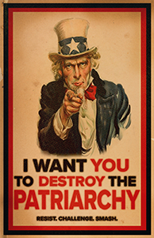
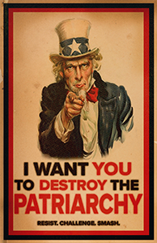

PSA: Smash The Damn Patriarchy
 

Elise was given the task to create a public service announcement poster about something she is passionate about. She always has been and will be passionate about the unjust systems that are in place within society trying to diminish others. Particularly during this time, in January 2022, with all the events going on politically at the time she felt inclined to make these pieces speaking against the patriarchy. The task given was to make one PSA poster but it soon turned into a series after her privileged male professor made degrading comments about her and her work. Blinded by his privilege he wasn't able to understand the message of the original one she made, so in return, she made another two posters to get the message across. Components: Photoshop